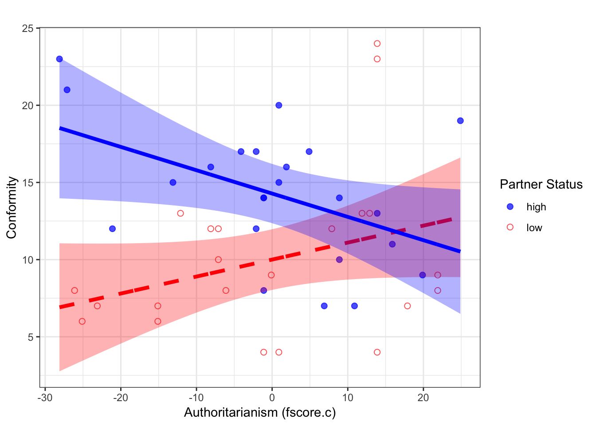

Interaction Effects from Regression Models: Plotting & Simple Slopes
This demo walks through how to plot interaction effects from regression models in R, complete with raw data points and 95% CI, and how to perform tests of simple slopes.
library(car)
library(ggplot2)Load example dataset (from car package)
For this demo, we will use the Moore dataset from the car package. For details on this dataset, run ?Moore. As the documentation from the package indicates, "the data are for subjects in a social-psychological experiment, who were faced with manipulated disagreement from a partner of either of low or high status. The subjects could either conform to the partner's judgment or stick with their own judgment."
d <- MooreVariables and Research Question
Here, our y variable is conformity. Our x variable is partner.status (low vs. high), and our z variable (moderator) is authoritarianism (fscore).
Our research question is whether the effect of partner.status on conformity depends on fscore (authoritarianism). We will, for the purposes of this demo, not concern ourselves with issues of power or sample size since our focus is on plotting and extracting simple effects.
Fit Regression Model
Before fitting the model, we will effect code the partner.status variable. It is not entirely necessary to do this, but it will simplify our interpretation of the results and facilitate plotting and analysis of the simple slopes in future steps.
d$partner.eff <- ifelse(d$partner.status == "low", -.5, .5)We will also mean center fscore. We will keep fscore in its raw units (i.e., we will not standardize this variable).
d$fscore.c <- as.vector(scale(d$fscore, center = T, scale = F))Now, we will fit a regression model in which we will include main effect terms for fscore.c and partner.eff, as well an interaction term.
fit <- lm(conformity ~ fscore.c * partner.eff, data = d)
summary(fit)##
## Call:
## lm(formula = conformity ~ fscore.c * partner.eff, data = d)
##
## Residuals:
## Min 1Q Median 3Q Max
## -7.5296 -2.5984 -0.4473 2.0994 12.4704
##
## Coefficients:
## Estimate Std. Error t value Pr(>|t|)
## (Intercept) 12.14060 0.68059 17.838 < 2e-16 ***
## fscore.c -0.02055 0.04850 -0.424 0.67402
## partner.eff 4.27767 1.36117 3.143 0.00311 **
## fscore.c:partner.eff -0.26110 0.09700 -2.692 0.01024 *
## ---
## Signif. codes: 0 '***' 0.001 '**' 0.01 '*' 0.05 '.' 0.1 ' ' 1
##
## Residual standard error: 4.562 on 41 degrees of freedom
## Multiple R-squared: 0.2942, Adjusted R-squared: 0.2426
## F-statistic: 5.698 on 3 and 41 DF, p-value: 0.002347We see that there is no main effect of fscore.c. In other words, averaging across conditions, authoritarianism is unrelated to conformity. We see that there is a main effect of partner.eff, indicating that people show more conformity to high (vs. low) status partners, controlling for authoritarianism. Importantly, however, we see that there is an interaction of these variables. Arguably the best way to interpret this interaction effect is to plot it and to perform simple slope analyses (i.e., compute the slope of fscore.c in each condition).
Generate Model Predictions
We will now create a publication-quality visualization of our interaction effect.
Note that there are several helper functions available in R that can help you visualize interaction effects faster. For example, the effects package can accomplish this in one line of code, as shown below. However, we are still missing elements we might want to include, such as the raw data points and confidence bands.
library(effects)
plot(effect(term = "fscore.c:partner.eff",
mod = fit,
default.levels=2),
multiline=TRUE)
Create Dataframes for Each Level of IV
Next, we will generate dataframes for each level of the IV that we want to plot (two in this case, one of each level of partner status). Here, we will plot a separate line for each level of partner status and show levels of authoritarianism along the x-axis. One could swap the presentation of these variables. However, the present approach seemed like a good place to start because one variable is continuuous and the other is binary. From a plotting and analysis perspective, your X and moderator variables are interchangeable (although they might not be interchangeable theoretically).
First, let's create a dataframe that contains authoritarianism scores and fixes partner status to be high (partner.eff == .5). We will use this dataframe to feed values into the predict() function to get the model-predicted values for our y variable, as well as lower and upper bound estimates. If you had covariates, you would have mean centered them in the model and then filled them in here with the mean (0) for all.
dfhigh <- data.frame(
fscore.c = seq(min(d$fscore.c), max(d$fscore.c), .1),
# populate the column of your X of interest with a sequential order of values;
# alternatively, you could just specify the min and max.
# .1 is arbitrary, but just specifies that R should fill in values
# between min and max in .1 increments. Helps CIs look smooth in plotting.
partner.eff = .5 # let's set "high" value of moderator +.5
) We repeat the same procedure, but fix the value of partner status to be low (partner.eff == -.5).
dflow <- data.frame(
fscore.c = seq(min(d$fscore.c), max(d$fscore.c), .1),
partner.eff = -.5
) Model Predictions
We will now use the predict() function to generate fitted values. We will append these values to the dataframes we created in the step above.
partnerhigh <- cbind(dfhigh, predict(fit, dfhigh, interval = "confidence", type =c("response", "terms")))
partnerlow <- cbind(dflow, predict(fit, dflow, interval = "confidence", type =c("response", "terms")))Plotting
Now, let's use these predicted values in a graph using the ggplot2() package.
intplot <- ggplot(partnerlow, aes(fscore.c, fit)) +
geom_point(data = d, # use original data to plot datapoints
aes(fscore.c, conformity, shape = partner.status, color = partner.status),
alpha = .7, size = 2, show.legend = T) +
scale_color_manual(values=c("high" = "blue",
"low" = "red"),
name = "Partner Status") +
scale_shape_manual(values=c("high" = 19,
"low" = 1),
name = "Partner Status") +
labs(x = "Authoritarianism (fscore.c)", y = "Conformity", title = " ") +
geom_ribbon(data = partnerlow, aes(ymin=lwr, ymax=upr), alpha = .3, fill = "red") +
geom_line(data = partnerlow, aes(fscore.c, fit), size = 1.5, color = "red", linetype = "dashed") +
geom_ribbon(data = partnerhigh, aes(ymin=lwr, ymax=upr), alpha = .3, fill = "blue") +
geom_line(data = partnerhigh, aes(fscore.c, fit), size = 1.5, color = "blue") +
theme_bw()
intplot
This plot suggests that there is a positive effect of authoritarianism for participants in the low partner status condition, and a negative effect for those in the high status condition. Our next step is to determine whether these simple slopes differ significantly from 0.
Simple Slope Analysis
To perform tests on the simple slopes (the slopes of authoritarianism in each condition), we will use a function that I wrote.
condslope <- function(x, z, c, y){
# x = name of x variable
# z = name of z variable (moderator)
# c = conditional value of z
# y = reg object
# reg function must be in this order x + z + x*z
out <- summary(y)
xz <- paste(x, z, sep=":")
w0.intercept <- out$coefficients["(Intercept)", "Estimate"] + ((out$coefficients[z, "Estimate"])*c)
w1.slope <- out$coefficients[x,"Estimate"] + ((out$coefficients[xz,"Estimate"])*c)
#y.cond <- w0.intercept + w1.slope*xvalue
coef2.var <- out$coef[x,"Std. Error"]^2
coef4.var <- out$coef[xz,"Std. Error"]^2
out.vcov <- vcov(y)
cond.se <- sqrt(coef2.var + (c) * (c) * coef4.var + 2 * (c) * out.vcov[x, xz])
t.val <- w1.slope/cond.se
p.val <- 2*(1-pt(abs(t.val), y$df, lower.tail=T))
lower95 <- w1.slope-qt(0.975,y$df)*cond.se
upper95 <- w1.slope+qt(0.975,y$df)*cond.se
return(list(w0.intercept=round(w0.intercept, digits = 2),
w1.slope=round(w1.slope, digits = 2),
t.val=round(t.val, digits = 2),
p.val=round(p.val, digits = 3),
lower95=round(lower95, digits = 2),
upper95=round(upper95, digits = 2)))
}First, let's test the slope of authoritarianism in the high partner status condition.
condslope("fscore.c", "partner.eff", .5, fit)## $w0.intercept
## [1] 14.28
##
## $w1.slope
## [1] -0.15
##
## $t.val
## [1] -2.11
##
## $p.val
## [1] 0.041
##
## $lower95
## [1] -0.3
##
## $upper95
## [1] -0.01We see that the slope of authoritarianism in this condition is b = -0.15. Given the t, p, and 95% CI, we can conclude that this slope is significantly different from 0.
Now, we will run the equivalent test for the lower partner status condition.
condslope("fscore.c", "partner.eff", -.5, fit)## $w0.intercept
## [1] 10
##
## $w1.slope
## [1] 0.11
##
## $t.val
## [1] 1.68
##
## $p.val
## [1] 0.1
##
## $lower95
## [1] -0.02
##
## $upper95
## [1] 0.24Although the slope is positive, b = 0.11, we are unable to conclude that it differs significantly from 0. At most, it is "trending" or "marginal."
View .Rmd source code
updated March 19, 2019
The material above reflects the best of my knowledge on this topic. Please be sure to check your results and code carefully.